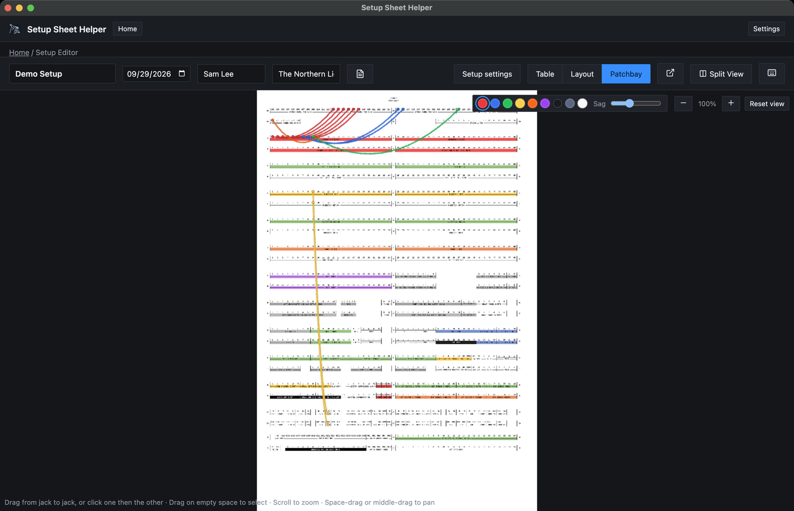
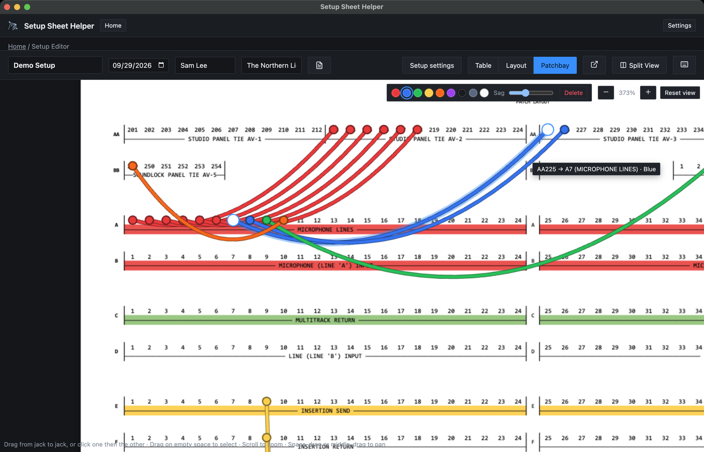

Part 6
The patchbay
Patchbay Mode puts the studio's patchbay drawing on screen. Draw a cable from jack to jack for every patch the session needs, and the patch prints with the setup sheet, with a list of every cable.

Opening Patchbay Mode
The editor's toolbar has a switch with three buttons: Table, Layout and Patchbay. Click Patchbay to open the drawing, and Table to go back to the sheet.
Toggle Patchbay Mode has no shortcut until you give it one in Settings → Keybinds. It switches between Patchbay Mode and Table Mode. ⌘L still goes to Layout Mode, from Patchbay Mode too.
Where the drawing comes from
The patchbay drawing belongs to the studio, so every setup in that studio uses the same one. Each setup has its own cables.
- Berklee rooms come with their patchbay drawings, except Studio A76, which doesn't have one yet.
- Your own studios get one in the studio editor. See The studio's patchbay.
If the studio has no drawing yet, Patchbay Mode says This studio doesn't have a patchbay drawing yet. Click Upload patchbay PDF… and pick the file. It becomes the studio's drawing.
The drawing has to be a PDF. The app reads the jack labels from the text in the PDF, so a drawing exported from a drawing or CAD program works best. A scanned drawing has no text to read. You can still draw cables on it, but they won't snap to jacks, and the hint at the bottom says No jacks could be read from this drawing — cables can go anywhere.
Drawing a cable
-
Pick a color
Click one of the swatches at the top right: Red, Blue, Green, Yellow, Orange, Purple, Black, Gray or White. The Sag slider next to them sets how far the cable droops between its ends. The app remembers both for the next cable.
-
Connect two jacks
Drag from one jack to another and let go. Or click one jack, then click the other. Each end snaps onto a jack when you're close to one. Hover a jack to see its name and the strip it's on.
While a cable follows the pointer, move toward the edge of the canvas and the view scrolls that way, so you can reach a row that's off screen. If you let go outside the canvas, the cable stays on the pointer: click a jack to finish it, or press Esc to drop it. Esc also drops a cable you started with a click.
Selecting cables
- Click a cable to select it. ⌘-click adds or removes one.
- Drag on empty space to draw a box. Every cable it crosses is selected. Hold ⌘ or ⇧ to add them to what's already selected.
- ⌘A selects every cable, and Esc clears the selection.
Hover any cable to see where it goes, such as AA225 → A7 (MICROPHONE LINES) · Blue. The far end's strip is named when it's different from the near end's.

Changing and deleting cables
- Color and sag. With cables selected, the swatches and the Sag slider change those cables instead of the next one. With several selected, the toolbar says how many.
- Re-patching. Drag a white end handle of a selected cable to another jack.
- Deleting. Click Delete in the toolbar, or press Del or ⌘⌫.
Zooming and panning
- Scroll to zoom in and out around the pointer, or pinch on a trackpad.
- Buttons: − and + at the top right, with the current zoom between them. Reset view returns to 100%, where the whole drawing fits.
- Keys: the Layout Mode zoom keys work here too. ⌘⇧= zooms in, ⌘⇧− zooms out, and ⌘⇧0 resets the view.
Zoom goes from 25% to 400%. To move around, hold Space and drag, or drag with the middle mouse button.
Undo
⌘Z undoes your last cable change, and ⌘⇧Z redoes it. Drawing, re-patching, recoloring and deleting are one step each, and so is one drag of the Sag slider. Cables save as you work, just like the sheet.
Printing the patch
Switch on Patchbay in the Export to PDF dialog. The switch only appears when the studio has a patchbay drawing. The PDF then ends with:
- The drawing with your cables on it, on a page of its own at the drawing's real size. A large patchbay drawing makes a large page, so print it scaled to fit.
- A list called Patch cables, with one row per cable: its number, where it starts, where it ends and its color. Rows are grouped under the name of the strip each cable starts on. An end that isn't on a jack reads Unlabeled point.
With Colored off, the drawing and cables print in gray, and the list still names each cable's color. The spreadsheet export has a Patchbay switch too. Part 3 covers both.
Good to know
- Duplicating a setup copies its cables. A studio template doesn't keep them.
- In Split View, each side has its own Patchbay Mode and its own cables.
- Patchbay Mode has no pop-out window. Only Layout Mode does.
- If the studio's drawing is replaced, cables stay where they are. Ends that land on a jack of the new drawing take its name. If the drawing is removed, the cables are kept but hidden until a drawing is uploaded again. See The studio's patchbay.
- A setup file includes its cables. See Part 12.